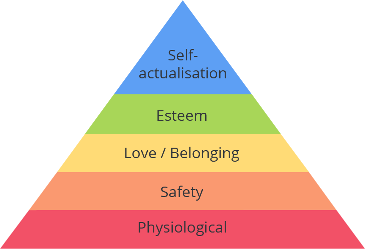
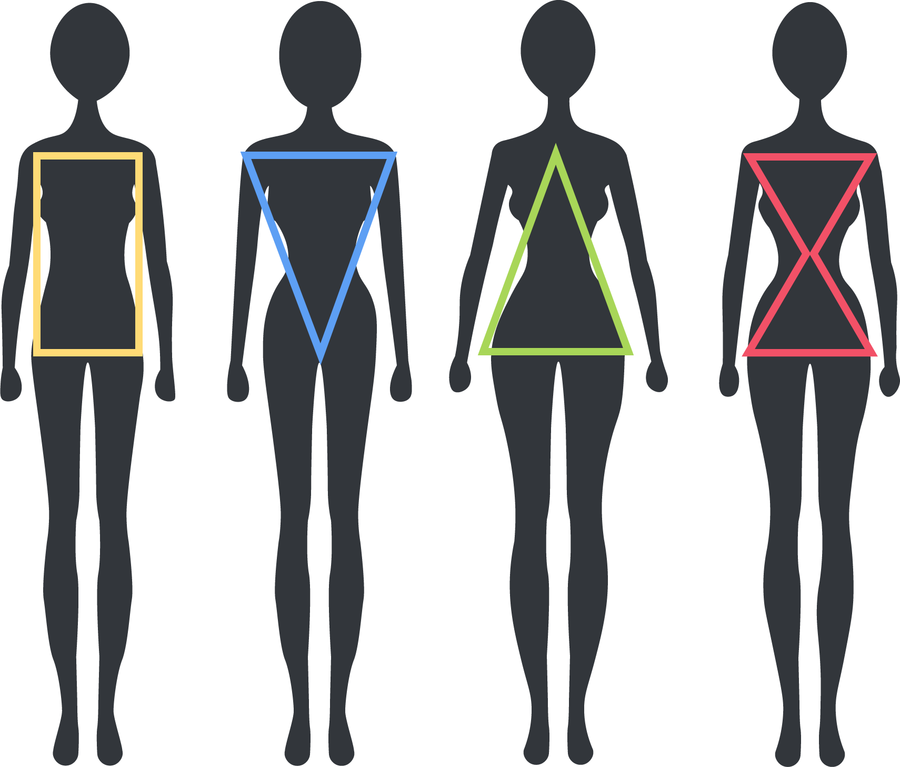

Introduction
How far are you from your phone right now? Can you reach it without moving? When you go to bed at night, is your phone within reach of your bed?
Where your phone is situated may seem trivial, the sort of thing you’d never normally think about, but it’s a striking illustration of the power of behavioral addiction.
Nomophobia (an abbreviation of ‘no-mobile-phobia’): the fear of being without mobile phone contact.
I wonder how many of us suffer from this?
📱
The relationship we have with our mobile phone has become more dependent than ever before, in fact it’s possible that our addiction to mobile technology is more dangerous than we realise. We tap, swipe and click on our mobile phones around 2,617 times a day.
How has our dependency on mobile technology evolved? Many advances in technology have taken place over the last number of years, including an increase in broadband and internet speed, and the improvement of technology itself and the services on offer. These advances mean modern technology is both more efficient and addictive than ever before. It has become a part of everyday life, more so than addictive substances such as alcohol and cigarettes ever have.
People use mobile technology in both their working and non-working lives; most modern jobs require people to use computers or phones in the work place, however, people are spending more time on their phones for social activity and entertainment.
While some features on our mobile phones are useful in our busy lives, the lines regarding usage are becoming blurred. As individuals, and as a society, we never switch off, and we have become accustomed to thinking this is acceptable; many young people have grown up in a world that offers instant access to the internet and the wide range of social networking platforms that it offers. Forums such as social media are great for allowing people to stay in touch, with billions of people sharing their lives in real time, however, there are many negative aspects associated with these forums which are impacting on our mental health.
Mobile phone usage is quite profound, and it appears to be growing in intensity with each generation, with children as young as 2 years of age owning a smart phone or tablet. Worryingly, it has become apparent among my peer group (18-25 year olds) that people are developing a level of anxiety if separated from their phones for any length of time.
I often wonder why people are so obsessed with their phones, are they afraid of missing calls from friends or family, are they engrossed in following the activity of other’s lives, or does their relationship with their phone fill an otherwise empty void? My belief regarding this growing level of obsession is reinforced by author Catherine Price who stated: “My mobile phone is the last thing I touch before I go to bed, and the first thing I reach for in the morning.”
The Addiction
Addiction can be defined as ‘continuing to seek out something, despite negative consequences’. Addictions emerge when a person can’t resist a behaviour, which, despite addressing a psychological need in the short-term, has the potential to produce significant harm in the longer-term.
Addictions offer the illusion of feeling happy through an immediate reward, and can take many forms and guises, for example alcohol and drugs. Addiction is associated with ‘anhedonia’, a lessened ability to take pleasure in life, apart from whatever the person is addicted to. People with addictions often try to hide their habits, particularly from themselves.
🍺 🚬
Catherine Price carried out research to ascertain the extent of our relationships with our mobile phones. Of those interviewed, 62% stated that ‘they couldn’t imagine their lives without their mobile phones’. Findings from the research were alarming; statistics revealed that the average person in the UK spends more than 2 hours a day on their mobile phone, this equates to 14 hours a week, 60 hours a month, or 30 days a year. Bizarrely, many people live in a constant state of hurriedness, stating they “don’t have enough hours in the day”, yet the time they spend on their mobile phone adds up significantly, in fact, over the average lifetime this amounts to a staggering 11 years of our life! This usage was widespread across every age group; however, it was most prevalent in the 16-24 year old age group. The research also identified that adults can spend up to 8.4 hours a day on screens, with 1.7 hours on social media; I wonder how people find the time to get anything done?
People are not born craving technology, they learn to use it, start to rely on it and eventually see it as indispensable. When children begin Primary School, they learn even more about the digital world, and by the time they are in Secondary School, they take photos hundreds of millions of photos, and share a huge amount of information on Instagram, WhatsApp, Messenger and text. These young people come to rely on these social media forums for validation and friendship.
Sometimes we reach for our phones for practical reasons, sometimes it’s our subconscious, sometimes it’s a need to feel connected or leveraging our need for affirmation. According to author Adam Alter, 77% of 18-24 year old’s claim that they reach for their phones before doing anything else, when they have nothing else planned. It appears that most people use their phones to pass the time when they are on their own as opposed to ignoring their friends. However, there is concern that our mobile usage is significantly reducing personal social engagement.
Research carried out in 2018 highlighted that the average 8-13 year old spent a third of their lives sleeping, a third at school and a third engrossed in modern technology (this took the form of mobile phones, tablets, laptops and TVs). Since the new millennium, the average child has spent more time communicating through screens than they have in direct face-to-face communication. It appears that mobile phones are hard to resist as they have become part of the norm within society and promote psychologically captivating experiences. Does this mean that our attachment to our phone is a societal addiction?
While platforms and apps can be designed to encourage social engagement, like cigarettes, they have the potential to become addictive. According to the Royal Society for Public Health (RSPH), Instagram, Twitter and Facebook are used by 1 in 4 every people in the world, with Facebook having 32 million users in the UK alone. Author, Adam Alter stated: “In 2004 Facebook was for fun, in 2017 it’s addictive.” Both phones and social media are being used to meet some of our basic needs, such as social engagement, social support, and mental stimulation.
Social media addiction affects around 5% of younger people, with 91% of 16-24 year old’s using the internet for the purpose of social networking. Young people aged between 16-19 years check their phones on average 90 times per day, with over a quarter of teenagers admitting to responding to messages during the night. This type of addiction is much easier to hide than substance abuse, however, it has the potential to become much more dangerous as it can go unnoticed for years. These alarming statistics have caused me to reflect on the amount of time I spend on my mobile phone and I am left to wonder if social media usage is more addictive in young people than alcohol or cigarettes? I am also having to consider my level of interaction on these forums to ascertain if I too am ‘addicted’.
Why the Addiction?
Why do people spend so much time on their mobile phones?
Dopamine is a ‘neurotransmitter’, it is a compound in the body that is used by the brain to send signals to the muscles in the body to make them move; it can also be used to make a person feel good as it plays a major part in the motivational component of reward-motivated behaviour. Why is this relevant? Addictive pleasure and reward patterns in the brain are part of the basis of social media addiction. It appears that when people get a ‘like’ on Facebook or Instagram, dopamine is released, activating pleasure-related receptors in our brains, teaching us to associate certain behaviours with rewards. It encourages us to not just care about other people’s judgements, but to ask for them by posting more. Using symbols such as hearts or thumbs up instead of real rewards has become an essential trick in the behaviour modification toolbox.
The need for belonging and affirmation is part of Maslow’s Hierarchy of Needs theory, humans need to love and to be loved. In order for our needs to be met completely, we must attain satisfaction on a number of levels in our lives, each level must be satisfied before we can progress to the next level. Why is this relevant to using social media? Over recent years it has become apparent that we use social media to achieve our sense of belonging and affirmation (third level) and build our self-esteem (fourth level); social media is providing us with recognition, status and respect from others. It is a typical human desire to be accepted and valued by others as we love getting reactions or reinforcements to the things we do. When we are unable to value ourselves, we feel the need to seek validation for our self-worth through comparing ourselves with other people.
Social media has the potential to change our relationship with society. The creators of Facebook have advised that this platform was designed “to bring people closer to their friends, family and the things they care about”; apparently it was never their intention to create something addictive! However, one of the most enthralling aspects of social media for users is ‘likes’, these can be received in the form of the retweets, hearts or a thumbs-up. Leah Pearlman, co-inventor of the ‘like’ button on Facebook said that she too has become hooked on Facebook. She stated that she has began valuing herself based on the number of ‘likes’ she received on her posts; she said: “When I need validation, I go to check Facebook; when I’m feeling lonely, I check my phone; when I’m feeling insecure, I check my phone.”
Social media has changed how we express our emotions publicly and how we view other peoples’ emotions. In 2016, Facebook released ‘six reaction features’ alongside the the ‘like’ button. Our emotions are a valuable resource, and these additional features allow people to express their emotional state more clearly. However, given that we can express or receive a range of different emotions on our timelines in quick succession, we neither display nor receive any emotional consistency. In addition, the emotions expressed by others who view things differently from us can impact on our perception of actual reality, causing us to doubt our feelings. I feel this is a major issue for younger generations who constantly seek confirmation of their worth through the comparison of how many ‘likes’ the receive, how many followers they have, or how many ‘streaks’ they have.
Unpleasant feedback can also play a role in addiction, the manipulation of our social emotions is the easiest way to generate rewards and punishments; negative reinforcement and punishment can include catfishing, senseless rejection, being belittled or ignored. I believe this can be particularly detrimental to young girls whose shared experiences can turn into a compulsive need for approval, which if not supported by their friends, can seriously impact their self-image.
As humans we have an instinctive desire for affirmation, but the more ways there are for us to be judged, the more we monitor our scores. According to the first Facebook President, Sean Parker: “Social validation and feedback loops are exploiting a vulnerability in human psychology.” Before stopping the use of all social media Australian model, Essena O’Neill spoke out about her feelings regarding her glamourous Instagram posts, in her final social media post she stated:
3,415 likes
essenaoneill I’ve spent the majority of my teenage life being addicted to social media, social approval, social status, and my physical appearance. Social media is contrived images and edited clips ranked against each other. It’s a system based on social approval, likes, validation, in views, and success in followers. It’s perfectly orchestrated self-absorbed judgment.
I believe O’Neill’s comments are justified as we do constantly check our phones to see if other people agree that we are popular.
According to Aza Raskin, former Mozilla and Jawbone employee, social media apps are deliberately designed to become addictive to users, he stated: “It’s as if they’re taking behavioural cocaine and sprinkling it all over your interface, that’s the thing that keeps you coming back.” According to writer and comedian Aziz Ansari: “Content isn’t even important. Whenever you check for a new post on social media, it’s just about seeing a new thing. You get addicted to that feeling.” This is reinforced by American Psychologist, Larry Rosen who believes that people have a desire for new information, he said: “Our phones deliberately incite anxiety by providing new information and emotional triggers every time we pick them up.” We check our phones, find something satisfying and get a burst of dopamine. This results in us checking our phones with the receipt of a reward.
Naomh McElhatton delivered a TED Talk about being ‘socially disconnected’, she described social media as the ‘crack cocaine of the digital age’ where we are living ‘superficial lifestyles in a selfie culture’. Do we compare our lives to those we follow, constantly feeling the need for approval?
The Implications
Our values and attitudes toward our bodies are often shaped by the society we live in, these beliefs are reinforced by our families, and by our own opinion, making every one of us unique and individual. The attitudes and beliefs that we develop become essential to how we use, shape and are shaped by media, which is becoming an increasingly powerful factor.
While we may be aware of our growing addiction to both our mobile phones and social media accounts, we may not be aware of the effect it is having on our lives. According to Psychologist Jean Twenge: “The arrival of the smartphone has radically changed every aspect of teenagers’ lives, from the nature of their social interactions, to their mental health.” The perception we see daily on social media of how to look, how to live, and how to have fun is having an impact on many people, both positive and negative. Furthermore, our dependency can affect us physically in form of ‘texting thumb’ and ‘elbow strain’.
Author Paul Schilder described body image as: “The picture of our own body which we form in our mind.” He believes that: “body image is not just a perceptual construct but also a reflection of attitudes and interactions with others.” Body dissatisfaction is defined as ‘a person’s negative thoughts and feelings about their body’. Body dissatisfaction and related unhealthy behaviours are most prevalent among children and teens as society’s expectations and ideals about appearance have become increasingly unrealistic.
Feelings and beliefs about body image are developed during early childhood, and worryingly, very young children are now beginning to exhibit body dissatisfaction. Research carried out by the All-Party Parliamentary Group specific to body image identified that girls as young as 5 years of age were worrying about their appearance. Children aged 5-6 years were asked to choose a body size similar to their own, nearly a third of these children chose a body size that was thinner than their actual size. These body dissatisfactions are often coming from extreme body portrayals in media, mainly in actions figures and dolls, such as Barbie, who has faced criticism due to her unrealistic body features, such as her tiny waist.
Billions of viewers engage critically with media imagery, and are educated consumers of magazines, movies, internet and video-game imagery. Media figures such as models, actors or sports personalities are often viewed as role models by a significant amount of people under the age of 40 years. Research carried out by the Royal Society for Public Health revealed that as many as 9 out of every 10 teenage females in their 20-30’s say they are not happy with their body shape. As a young woman, I believe that people’s perceptions around their body image is hugely influenced by TV, printed media and social media. Many females compare themselves to models and how they look. Even with an awareness of airbrushing and filtering which is used to enhance images, many females are still influenced by what they see.
Research has revealed that 93% of young women talk to others about being ‘fat’ (this includes derogatory comments about their appearance and the need to lose weight). Exposure to social media can further fuel this mis-conception about weight; it is believed that information included on these forums has been linked with eating disorders and body image issues in young girls and women. The Geena Davis Institute carried out a study on gender, this revealed that female characters in a range of films and TV programmes were twice as likely to have small waists when compared with their male counterparts. Messages displayed via media specific to young girls and women regularly place great emphasize on the importance of youth, beauty and size.
446,172 likes
jameelajamil There is an epidemic of low self-esteem for girls and women across the world because of social media
Another recent development on social media is the proliferation of ‘thin’ imagery. ‘Thinspiration’ (thin and inspiration) is defined as media content that recommends weight loss, often in ways that glorify disordered eating behaviour. There are also many pro-eating disorder internet forums and websites, these communities encourage each other’s disordered eating practices. Thankfully Instagram and Twitter are working to control the volume of content specific to eating disorders by banning common hashtags such as #thininspiration or #thinspo.
Research into the impacts of taking and posting ‘selfies’ on body image found that ‘likes’ on social media often boost body confidence, however, the majority of people feel some form of social pressure to post flattering selfies. It has been argued by some that posting ‘selfies’ encourages people to objectify someone’s appearance, while others believe that these images showcase variations in beauty and celebrate uniqueness. According to studies completed by author Tanya Goodin, the average 20 year old will take up to 26,000 ‘selfies’ during their life; around 93 million ‘selfies’ are taken every day worldwide. With over ten million photographs uploaded onto Facebook every hour, there is an endless supply of images for young girls and women to compare themselves with. Based on this and the potential to receive negative feedback, many users take hundreds of photos before selecting one to post. While there are some people who aren’t bothered by what others think of them, the majority of people depend on feedback from others in order to be sure of their own self-worth and to value themselves.
This is not a new concept, throughout history the essential use of women in the media has not changed. According to author John Berger: “She must survey everything she is and everything she does, because how she appears to others is of crucial importance for what is normally thought of as the success of her life.”
Most teenagers have a social media profile, these social networks are providing these young people with an opportunity for self-expression, self-presentation, communication and social comparison on an unprecedented scale. According to Sanctus, 62% of people believe they are ‘inadequate’ with comparing themselves with others online. Co-founder of Sanctus, George Bettany stated: “The unrealistic expectations set by social media may leave young people with feelings of self-consciousness, low self-esteem and the pursuit of perfectionism which can manifest as anxiety disorders.” A survey carried out by Common Sense Media highlighted that many young people are concerned with how their profile appears on social media platforms, girls were found to be the most vulnerable with 35% of young girls citing they were worried about their friends tagging them in unattractive photos. The survey also found that 27% of people were anxious about their appearance in photos that had already been posted, and 22% of young people felt negatively about themselves if they hadn’t received any feedback about images that had been uploaded.
70% of 18-24 year olds would consider cosmetic surgery to enhance their appearance, this shocking statistic was revealed by the Royal Society of Public Health after they carried out research into the effects of social media usage. In 2018, actress Lili Reinhart spoke at ‘Glamour’s Women of the Year Summit’ about body image, she stated: “People told me I didn’t have the right to talk about being self-conscious about my body because I was skinny.” Reinhart stated that she unfollowed people on social media who made her feel bad about her own body and encouraged her fans to “be authentic” when it comes to posting images online.
1,879,457 likes
lilireinhart There is not one shape that's more beautiful than another. We should be exposed to all body types in advertising and media.
Through the use of hashtags such as #uglyselfie and #nomakeup girls, the ‘no-filter’ trend on Instagram is encouraging young girls to share their untouched, unadorned true ‘selfies’, and accept whatever feedback they receive. Actress and presenter, Jameela Jamil initiated a campaign called ‘I Weigh’ to celebrate people’s achievements and post positive messages rather than their weight or their appearance. She stated: “Women are just going ‘I’m struggling, and that is part of what makes me a beautiful and worthwhile individual, and these are all the things that I love that have nothing to do with my exterior.’” Plus-size model Stephanie Teboah praised Instagram for being a site that hosts ‘body-positive’ content, citing that users can control their feeds to see only the content they want to see.
Negative comments or sexual references about women have the potential to impact on how they are seen in society. American researchers Jannath Ghaznavi and Laramie Taylor carried out an analysis of images included on Twitter and Pinterest and reported that these often tended to be sexually suggestive and objectifying, with a focus on skinny women. They concluded that regular exposure to these kinds of images, in a situation where they are socially acceptable, presents serious risks to women engaged in online communities. Many influential people such as journalists and bloggers are beginning to raise public awareness about the derogatory remarks made on social media platforms about women’s appearance, weight and sexuality. Many people have called for these platforms to actively stop these attacks against women. Both Facebook and Instagram are addressing this matter by reviewing their processes for the reporting of abuse, which is really great to see.
Conclusion
It appears that most people, regardless of their age, have an intimate relationship with their mobile phone, and for a lot of people, social media has a huge influence on their lives.
It’s the effect this is having on people which is worrying, the reality is that many people have a ‘fake online persona’, they create an illusion of the person they want others to see, including stories and modified images that make their lives look exciting. This is causing others to examine their lives which may appear mundane, boring and ordinary. These feelings can lead to people feeling a range of emotions, including jealousy, inadequacy, loneliness or being a ‘failure’. This is affecting people’s confidence levels and how they view themselves.
As a society we need to consider the amount of time we spend on our mobile phones, could we use our time more constructively? With Apple releasing Screen Time and Google releasing Digital Health, it is clear that our addictions to our mobile phones are clear, and that we should be managing our time more effectively.
It is also important to reflect on the extent by which we are influenced by what we see on social media. In recent years there has been much discussion and a raised awareness of the portrayal of women and girls in various media outlets; it is important that more research is carried out to ascertain the impact such media is having on young people, particularly females, with regards to body image.
While social media can be constructive in that it allows us to foster friendships and bolster self-esteem, it can also be destructive in terms of how it affects us emotionally. We need to be aware of the potential effects its contents can have on us, there is a need to ensure that posted content is better censored and that imaginary is reflective of all society.
Social media is a very powerful tool, as a society we need to be aware of that power, we need to realise that it can be used to tackle unrealistic ideals and stereotypes, it can be used for the greater good.
Bibliography
- Alter, A. (2017). Irresistible. New York: Penguin Press.
- Berger, J. (2012). Ways of seeing. London: British Broadcasting Corp.
 Grogan, S. (2017). Body image: Understanding Body Dissatisfaction in Men, Women and Children. New York: Routledge.
Grogan, S. (2017). Body image: Understanding Body Dissatisfaction in Men, Women and Children. New York: Routledge.- Lanier, J. (2018). Ten arguments for deleting all your social media accounts right now. London: Bodley Head.
- Price, C. (2018). HOW TO BREAK UP WITH YOUR PHONE. London: Trapeze.
- Goodin, T. (2017). Off - Your Digital detox for a Better Life. London: ilex.
- BBC.com. (2018). Is social media messing with our emotions? - BBC Ideas. [online] Available at: https://www.bbc.com/ideas/videos/is-social-media-messing-with-our-emotions/p065sprc [Accessed 10 Oct. 2018].
- BBC News. (2018). Does social media impact on body image? [online] Available at: https://www.bbc.co.uk/news/health-29569473 [Accessed 8 Oct. 2018].
- BBC News. (2018). 'Epidemic of low self-esteem for girls'. [online] Available at: https://www.bbc.co.uk/news/newsbeat-43501074 [Accessed 9 Nov. 2018].
- BBC News. (2018). Instagram 'worst for young mental health'. [online] Available at: https://www.bbc.co.uk/news/health-39955295 [Accessed 1 Nov. 2018].
- BBC News. (2018). Riverdale star Lili Reinhart's 'powerful' body image speech. [online] Available at: https://www.bbc.co.uk/news/newsbeat-46177070 [Accessed 12 Nov. 2018].
- BBC News. (2018). Social media firms urged to tackle online body shaming. [online] Available at: https://www.bbc.co.uk/news/uk-40536281 [Accessed 1 Nov. 2018].
- BBC News. (2018). Social media is 'deliberately' addictive. [online] Available at: https://www.bbc.co.uk/news/technology-4464 [Accessed 10 Oct. 2018].
- BBC Three. (2018). Would you buy photos to fake the perfect life on Instagram? - BBC Three. [online] Available at: https://www.bbc.co.uk/bbcthree/article/10f77fff-06ed-4c11-a91a-d1413df96d23 [Accessed 13 Oct. 2018].
- Commonsensemedia.org. (2018). Children, Teens, Media, and Body Image | Common Sense Media. [online] Available at: https://www.commonsensemedia.org/research/children-teens-media-and-body-image [Accessed 16 Nov. 2018].
- Knorr, C. (2018). How girls use social media to build up, break down self-image. [online] CNN. Available at: https://edition.cnn.com/2017/01/12/health/girls-social-media-self-image-partner/index.html [Accessed 9 Oct. 2018].
- McElhatton, N. (2018). TED Talk - Virtually Connected Socially Disconnected. [video] Available at: https://www.youtube.com/watch?v=bvfd0EBSHJc [Accessed 10 Oct. 2018].
- Newsroom.fb.com. (2018). Hard Questions: Is Spending Time on Social Media Bad for Us? | Facebook Newsroom. [online] Available at: https://newsroom.fb.com/news/2017/12/hard-questions-is-spending-time-on-social-media-bad-for-us/ [Accessed 16 Oct. 2018].
- RSPH.org.uk. (2018). #StatusOfMind [online] Available at: https://www.rsph.org.uk/uploads/assets/uploaded/62be270a-a55f-4719-ad668c2ec7a74c2a.pdf [Accessed 12 Oct. 2018].